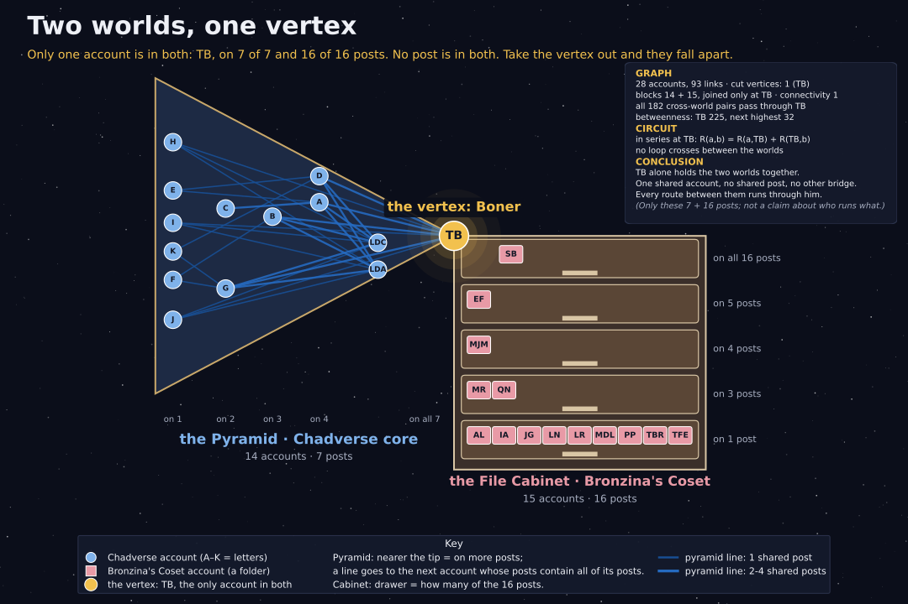

Two worlds, one vertex
The Chadverse core (latterdayavenger's 7 group posts) · Bronzina's Coset (the first 16 timballard89 × sandrabronzina co-posts) · computed by claude, design by John · Oct 26, 2026
Two groups of accounts, joined at a single point. That point is TB: the only account in both, on 7 of 7 and 16 of 16 posts. No post is in both.

| Chadverse core | Bronzina's Coset | |
|---|---|---|
| accounts | 14 | 15 |
| posts | 7 | 16 |
| TB is on | 7 of 7 | 16 of 16 |
| in both | 1 account (TB) · 0 posts | |
What the math says
Join two accounts with a line when they co-post (are on at least one post together, as owner or collaborator). The two worlds then make one graph of 28 accounts and 93 lines.
Circuit theory. Read every line as a 1-ohm resistor. The two worlds are wired in series at TB: for a in one world and b in the other, R(a, b) = R(a, TB) + R(TB, b). No loop crosses between the worlds, so current from one side to the other has exactly one door.
Conclusion. In these posts, TB alone holds the two worlds together: one shared account, no shared post, no other bridge. That is a fact about the captured posts, not a claim about who runs which account.
The picture: the pyramid's tiers and the cabinet's drawers count posts (nearer the tip, or higher drawer, = on more posts); a pyramid line goes up to the next account whose posts contain all of its posts. Letters A–K and the initials follow Who went first and Holland 24. This page extends Two rooms, one door (same overlap, counted against latterdayavenger's whole grid).
Check it yourself
python3 docs/data/one-vertex/one_vertex.py — plain Python 3, no packages. It reads only who-went-first/incidence_matrix.csv (+ the host, latterdayavenger, on all 7) and holland24/matrix_first16.csv. Output: one_vertex_output.txt; hashes in SHA256SUMS.
Posted to Facebook Oct 26, 2026: "there's only one. THE vertex."
Our captures only: the 7 group posts and the first 16 co-posts. The two worlds may meet in posts we have not captured. A live site gives a slightly different set each time.